Defines a reusable query to the application database.
Many times you may need to make queries to the database to analyze data and be able to make decisions.
In this sense, you may need to group data according to one or several criteria, make calculations, and finally view the result in a certain way such as:
- A static table, with fixed rows and columns
- A dynamic table, which allows, for instance, shifting columns and grouping data
- Or a chart
The Query object allows you to create these queries in a simple and intuitive way, thus enhancing the value of the information retrieved from the database.
Query object creation and description
You can create a Query object through the New Object dialog (it is inside the Reporting group).
Query objects are composed of four sections:
1) Structure
2) SQL Statement
3) Preview
4) Documentation.
These sections are displayed below the query's name.
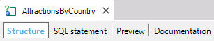
The most important task executed using the Query object is the definition of the query. Each Query object defines one query over the database, and a very intuitive GeneXus-assisted definition interface is provided to make this task easier.
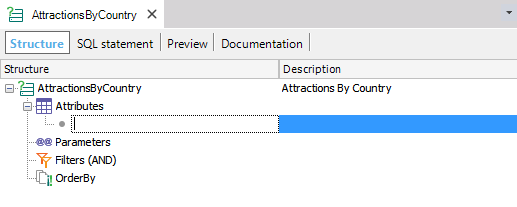
A query is defined in the Structure section of the object, which has four main subsections:
- Attributes: Attributes that will be returned in the query result.
- Parameters: if the query receives parameters to filter the result, it must be declared in this section.
- Filters: Filters applied to the query's result.
- OrderBy: Declares the desired default query order. This option is not taken into account when using a pivot-table output.
After filling the query structure with the proper data, the object will look, for example, as the following image:
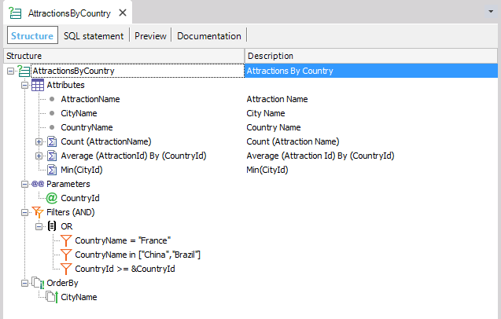
The attributes involved in the query are selected here in a simple flat list. They can be added to the list by dragging from the Work With Attributes toolbox or just writing the attribute name inline in the query structure. The suggest mechanism is provided while writing to make attribute selection easier and faster.
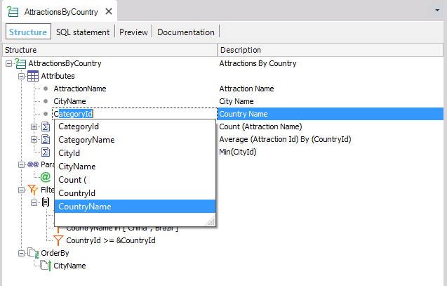
The description column will be the label for the attribute in the query output, is recommended to check these values when defining the Query. The attribute list can be reorganized by moving the items up and down; check the contextual menu for more options.
Also, it is possible to define for the attributes:
- Aggregation function: the functions available are Count, Sum, Average, Min, and Max (*). The definition of nested aggregation functions is allowed - i.e. Sum(Count(ProductName)). The function to be applied can be set by typing it inline or by right-clicking on an attribute with aggregation and using the contextual menu.
Also, you have the possibility to group by some attribute before applying the aggregation function. This functionality allows the user to consult the data in different ways without creating all the DataBase tables.
As an example, imagine you have the table Year with the attributes YearId, MonthId, and DayId (the table will have 365 registers), but you want to make a Query by Month. To do this, you can use the aggregation: Sum(YearId) by (MonthId) that will show only 12 registers instead of 365. The syntax for this aggregation is as follows;
<Aggregation function>(<AttributeName>) by(<AttributeName1>, <AttributeName2>, ..,<AttributeNamen>)
* Not all aggregation functions apply for all attributes types. Sum, Average, Max and Min are only available for Numeric attributes. Also, when dragging and dropping a Numeric-with-decimals attribute to the query structure, the Sum function is automatically applied.
- Percentage: set that the attribute information is going to be displayed in percentage terms. Only for attributes with aggregation functions previously applied. You can configure to show it as a percentage with the Show as percentage contextual menu option.
- Filters: particular filters for the attribute (when using an aggregated attribute). can define different kinds of filters for the attribute; the options are the same when defining a global one, refer to the filter section below.
- Expressions
Properties (displayed in the Properties section) varies depending on the type of the selected attribute:
For example. ShowAllValues property is only available for attributes with no aggregation functions applied while the properties Percentage and Calculation Group are only available for attributes with aggregation applied.
| Attributes with aggregation functions applied |
Attributes with no aggregation functions applied |
| 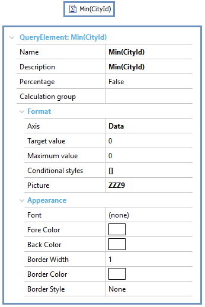 |
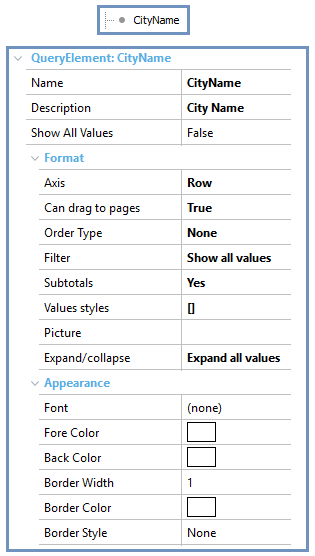 |
In this section it is possible to define the query parameters and configure the following properties:
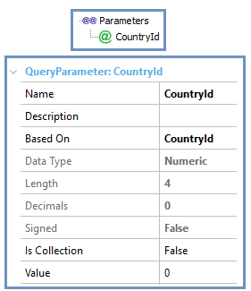
- Name: parameter name. This property value will be used when the query parameter values are set at runtime for the QueryViewer control.
- Description: parameter description.
- Based On: define the parameter type based on an attribute or domain.
- Data type: parameter type (depending on the type set here other properties can be available such as Length, Decimals, Signed. Date format or Hour format).
- Is Collection: defines whether the parameter is of type Collection. If the value is true is displayed another property (Collection value) to determine the values of the Collection. More information: Query Object: Parameters.
- Value: default value for the parameter; you will set it in run-time; if not the default value will be applied.
This section specifies the query filters. A deep treatment about Filters (with formal syntax diagrams): Query object: Filters
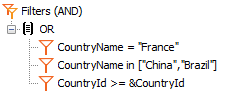
Each filter definition consists of a group of filter elements linked with a logic operator (AND, OR), and these elements can be:
- List Filter: indicates a list of values for the attribute to be filtered. The syntax is as follows:
<AttributeName> in [<Value>, <Value>, ..., <Value>]
- Range Filter: indicates a filter using a list of value ranges linked with a logic operator (AND, OR). In each range you can use relational operators (<, >;, >=, <=, =), constants and parameters. This type of filters also accepts many types of syntax itself, for example:
<AttributeName> in [<Value> to <Value>] or <AttributeName>+"-"+<AttributeName> in [<Value> to <Value>]
- Filter by Other Attribute: indicates a filter using the values of another attribute.
- Other filter groups: using the filter groups, any multilevel filter definition can be inserted in the query.
In the SQL Statement section, the SQL statement that will be used to retrieve the data from the database can be seen.
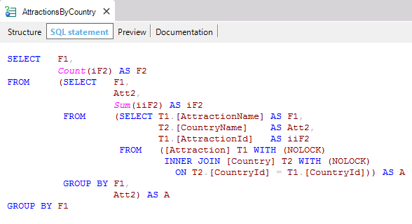
This option allows modifying easily all the properties related to the Output of the Query object and seeing all it's effects immediately, the QueryViewer control takes all the properties values from the associated Query object as the default values.
There are four different ways to preview the query being defined:
- Table
- PivotTable
- Chart
- Card
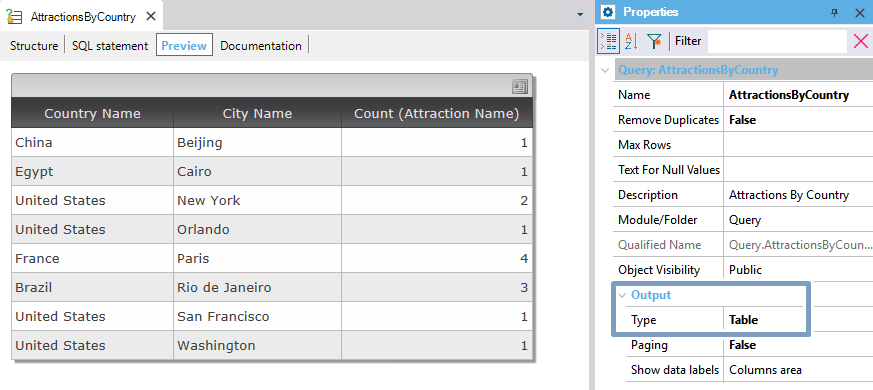
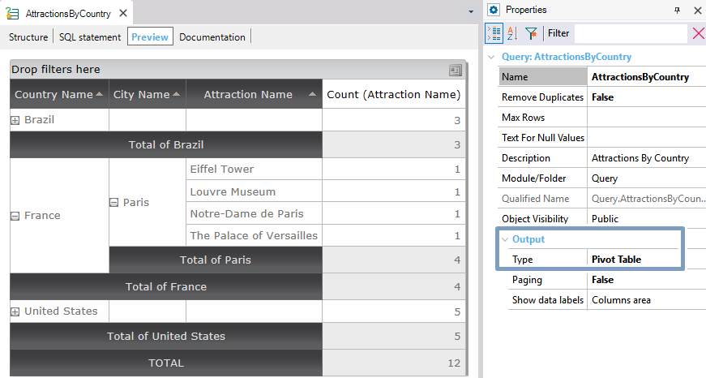
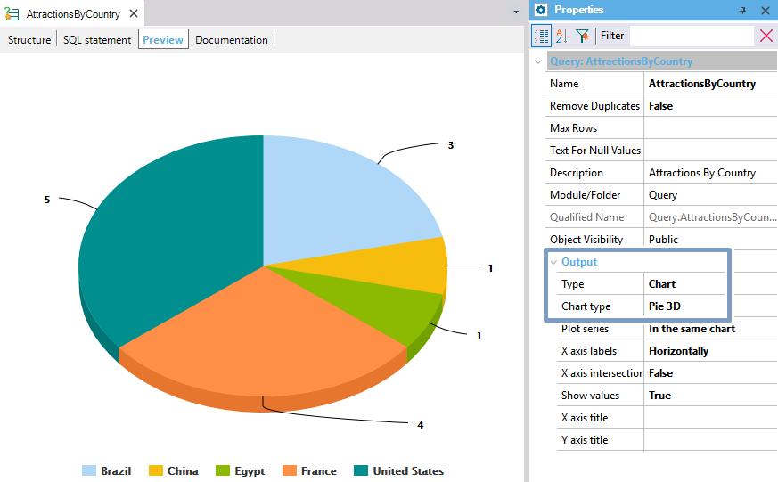
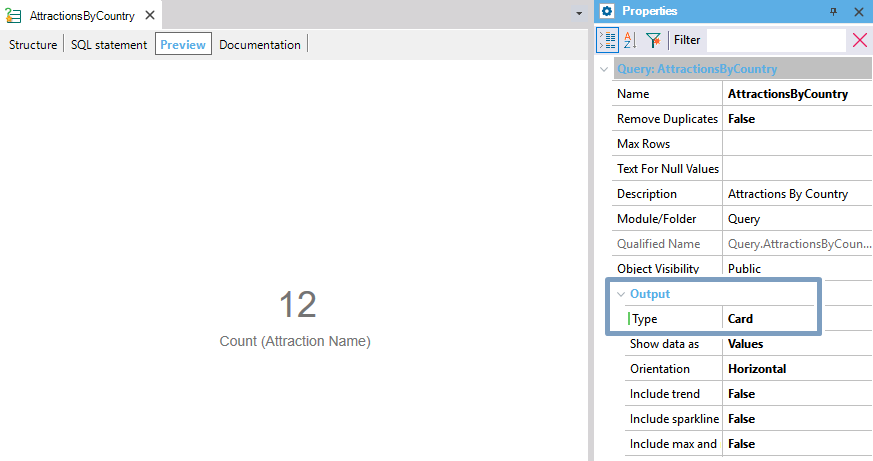
This Preview tab is the same as the query you will get in a Web Panel using the QueryViewer control.
A complete example using the Query object and Query Viewer control can be located here: Query Object Usage Example.
|